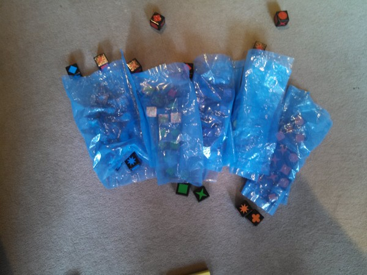

dada2.
Freitag, 17. Juni 2016,
Immer noch unklar. Aber beim Interpretieren war ich ja nie besonders gut (Hallo Frau Prof. Egg!)

dada.
Freitag, 17. Juni 2016,
Das schöne am Zusammenleben mit kleinen Kindern is ja, dass das komplett unbeschwerte Dadaisten sind.
Ich war vorhin grade mit Marlene im Wohnzimmer und wir haben mit Bauklötzen gespielt. Dann musste ich kurz einen Stock höher zu Frederik, kam nach geschätzt zwei Minuten wieder runter. Marlene nicht zu sehen.
Ich also "Marlene, wo bist du?"
Aus der Küche "Da bin ich wieder, jetzt können wir!". Rief sie und bog grinsend um die Ecke, in der Hand eine Rolle Spagat und fünf Eiswürfelbeutel. Bis jetzt ist noch unklar, was eigentlich genau der Plan ist.